让日常细节，讲出人生的选择。
《初瑞雪 · 逆境中开花》以 AI 影像重构人物经历，将成长、创业与家庭节点，组织为一部 05:11 的短视频人物传记。
影片采用第一人称观看位置，以手部动作、生活物件与空间变化连接不同阶段：童年被母亲牵住，长大后为母亲谋生，经历挫折与重建，后来成为孩子与更多人的依靠。
初瑞雪 · 影像回忆录
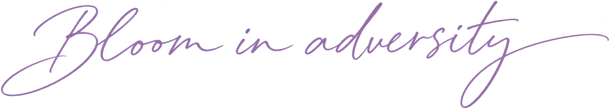
把经历变成光就是我。
不被定义才是我最好的答案。
最初，是被妈妈牵住。
为了妈妈，开始谋生。
跌落之后，再站起来。
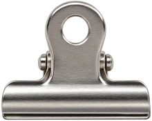
告别之后，独自南下。
以妈妈的名字，重新开始。
后来，成为孩子的依靠。
01 / PROJECT FILE
一部关于成长、创业与家庭的第一人称 AI 人物传记。
《初瑞雪 · 逆境中开花》以 AI 影像重构人物经历，将成长、创业与家庭节点，组织为一部 05:11 的短视频人物传记。
影片采用第一人称观看位置，以手部动作、生活物件与空间变化连接不同阶段：童年被母亲牵住，长大后为母亲谋生，经历挫折与重建，后来成为孩子与更多人的依靠。
辛选联合创始人 · 供应链与品牌运营
据北京商报 2025 年 8 月报道，初瑞雪长期主导辛选的供应链与品牌运营，并在当月被任命全面接管辛选集团。
在这部影片里，职业履历与家庭关系并行展开。对母亲的牵挂是故事的起点，创业、相守与新的承担，则构成她一步步向前的人生。
北京商报 / 2025.08.29 ↗02 / THE NARRATIVE
对母亲的牵挂，串起谋生、离别与重建。手部镜头，让照顾与承担发生在观众眼前。
童年 — 2008 / 从被照顾，到想照顾母亲。
童年时母亲生病，父亲承担家用。长大后，她在餐厅驻唱、做服装生意，为母亲筹集医药费。后面的谋生与创业，由这份牵挂开始。
镜头线索：开篇先看见母亲牵住孩子的手，随后转向驻唱与劳动，人物从被照顾的一方走向主动付出。
片尾再次回到母亲的病床与童年牵手，回应开篇的关系。
EIGHT CHAPTERS / 八段人生
因母亲而出发，历经两次挫折，再走向重建、相守与承担。章节按原片情节与字幕整理。
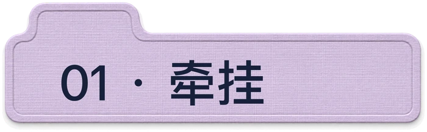
母亲的病，最早的牵挂
片头从长春的初雪与母女牵手开始。童年时母亲患病，长期吃药、定期输血；父亲承担家用，也叮嘱女儿记得喂妈妈吃药。照顾母亲，是后面谋生与创业的起点。
镜头：牵手、病房与递钱，把家庭的压力放进孩子看得到、摸得到的细节。
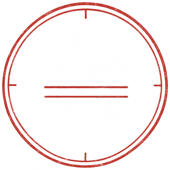
本章镜头 / FILM STILLS
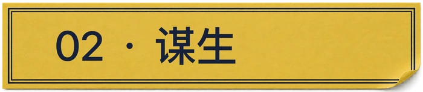
从驻唱，到第一桶金
2008年，她在餐厅驻唱，为母亲筹集医药费。雪夜求助后，赚钱的愿望变得更迫切。母亲支持她做服装生意，随后是淘宝店、打包发货、皇冠店，直到2011年赚到第一个100万、买车买房。母女合唱的画面，把事业的起步重新连回母亲。
镜头：驻唱的暖光、雪夜的冷色与拥挤的打包间依次交代处境；网店与车辆镜头标记实际进展。
本章镜头 / FILM STILLS
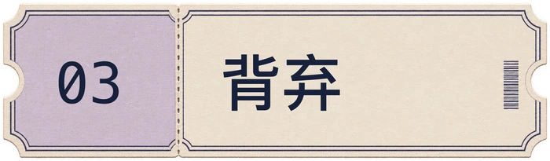
团队散了，重新找回自己
2013年，合伙人背叛，团队解散。原本运转的生意停下来，人物走进独处与自我怀疑。朋友的鼓励之后，她决定卖车筹集资金，为下一次创业做准备。
镜头：货物堆积、镜中擦拭、朋友对话与卖车画面构成连续转折。这一段的停顿有明确原因。
本章镜头 / FILM STILLS
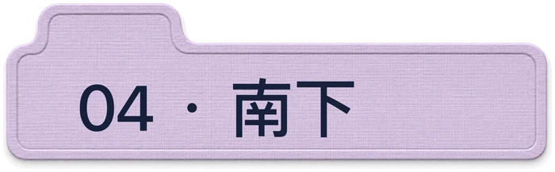
广州再创业，也再次受挫
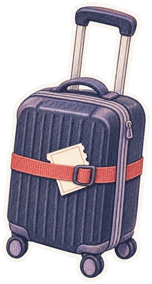
卖车之后，她只身前往广州，再次创业，进入化妆品行业。接下来却遭遇黑心工厂，损失惨重：退货、投诉、进厂与收拾文件都属于这次挫折。夜里母亲的叮嘱，让人物与最初的牵挂重新相连。
镜头：车站从握手近景切到远景，呈现离别；厂房与暗室随后打断出发时的希望，为重建铺垫。
本章镜头 / FILM STILLS
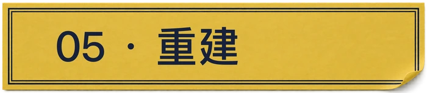
以母亲之名，创立 ZUZU
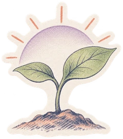
2014年，她重振旗鼓，创立与母亲同名的品牌 ZUZU。影片随后呈现品牌拓展、央视《财智论语》访谈，以及2015年的美博会和捐资建设大凉山希望小学。母亲既是创业的起点，也一直出现在她的讲述里。
镜头：门头、团队、访谈、展位与孩子们，把重建后的事业和公益逐步展开。
本章镜头 / FILM STILLS
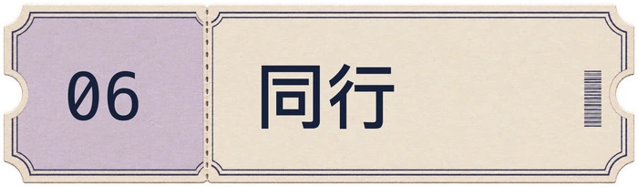
认识辛巴，共同创立辛选
2016年，她入驻快手，认识辛巴。2017年，两人共同创立辛选，她担任联合创始人。手机里的直播、面对面的交流与仓库现场，构成影片中事业合作的这一章。
镜头：观看从手机屏幕转入共同工作的空间，交代从相识到合作的变化。
本章镜头 / FILM STILLS
女儿出生，求婚与家庭生活
2018年，女儿出生。2019年，北京奥体演唱会中辛巴求婚，影片以婚纱视角与戴戒指的动作表现承诺。之后进入“回归家庭，退居幕后”的阶段，陪孩子学习、骑马。
镜头：产房、婴儿握手、求婚戒指与亲子日常按影片顺序连接，母女之间的动作在下一代身上得到回应。
本章镜头 / FILM STILLS
回归台前，也把后来的人托起
2025年，她回归担任辛选董事长；影片接着呈现8月29日回归首秀、“我在，辛选就在”，以及欢迎陈先生加入辛选成为合伙人。2026年的段落是托举徐杰成为辛巴门徒。敬茶之后，影像回到母亲的病床与童年牵手，再转入片尾资料相册。
镜头：回归直播、合伙人与拜师敬茶交代新的责任，最后以病床和牵手呼应开篇。
本章镜头 / FILM STILLS
03 / FILM LANGUAGE
手、光与距离，连接不同的人生章节。
从被牵住，到去承担。
双手置于前景，观众从孩子的位置进入故事。人物关系通过触碰建立，牵挂成为开篇的情感线索。
镜头判断 / 前景的双手，让第一人称视角拥有具体的身体感。
打包的动作与周围堆积的货物共同进入画面。奋斗被写进具体的劳动，观众能看见手正在做什么。
镜头判断 / 近处的动作与拥挤的空间共同交代人物的工作状态。
孩子握住手指，让开篇的牵手动作再次出现。人物从被牵引的人，走向可以被依靠的人。
镜头判断 / 相似动作连接两代人，为故事建立情感呼应。
走过寒夜，也记住日光。
雪、道路与远处车灯形成冷蓝色的环境。前景拦车的手，让人物的处境有了具体的动作。
镜头判断 / 环境冷色与远处暖灯并存，表达艰难处境中的方向感。
餐厅的暖色光线与雪夜形成对照。不同空间的色温变化，让驻唱与赶路在视觉上拥有各自的情绪。
镜头判断 / 保留场景之间的冷暖差异，让光线参与叙事。
孩子身旁的暖色日光，将观看带回亲密关系。情绪由环境的寒冷，逐渐靠近人的陪伴。
镜头判断 / 暖色与亲密动作同时出现，完成对前段冷夜的情绪回应。
人变小了，牵挂没有。
车站告别先从握手进入。近处的动作让观众靠近人物，离别由关系的细节开始。
镜头判断 / 近景聚焦触碰，让情感先于空间被感知。
远景拉开人物与观众的距离。人物在更大的车站空间中变小，离开的感觉由景别变化形成。
镜头判断 / 从握手切到远景，让距离变化承担叙事。
04 / THE ARCHIVE
从原片片尾取出的生活片段。在真实照片里，认出镜头中的人。
05 / THE FILM
完整影片 / 05:11 / 快手